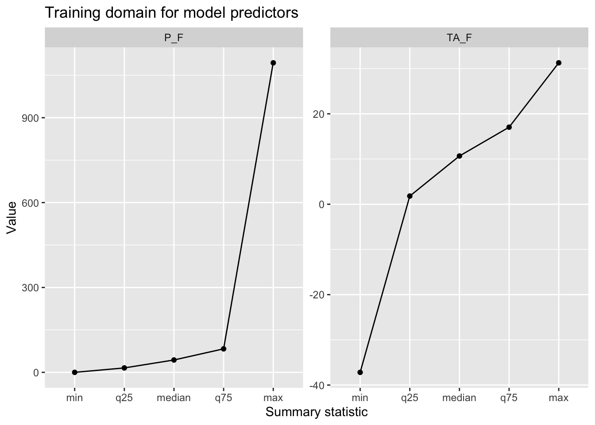
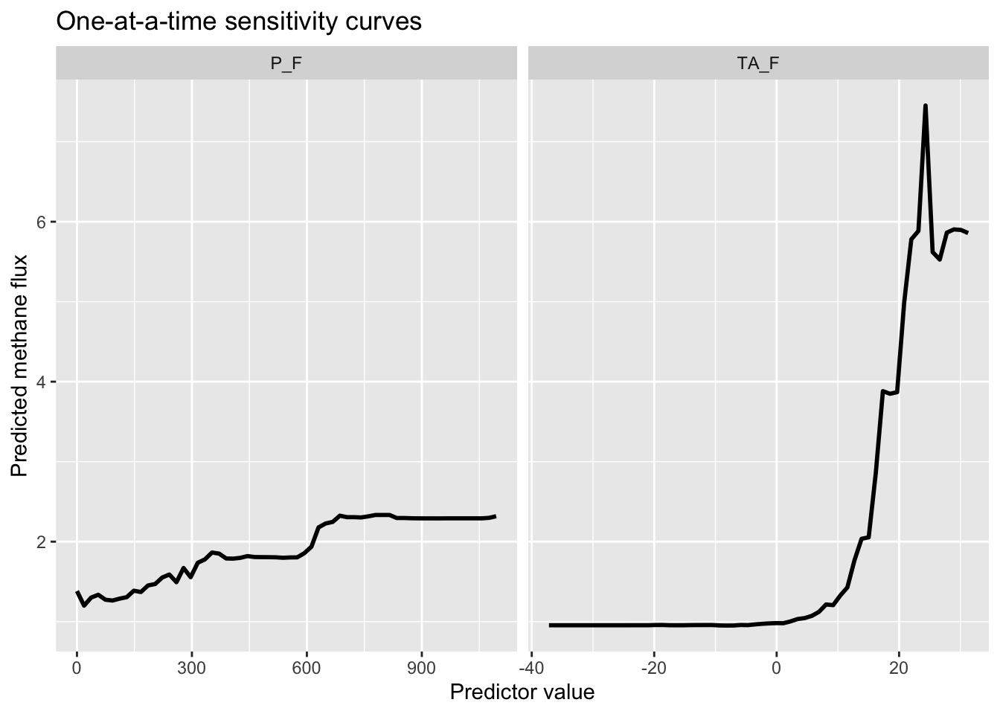
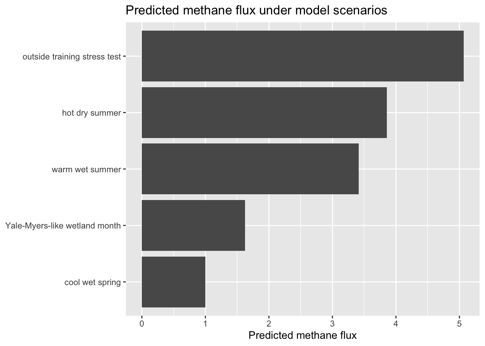
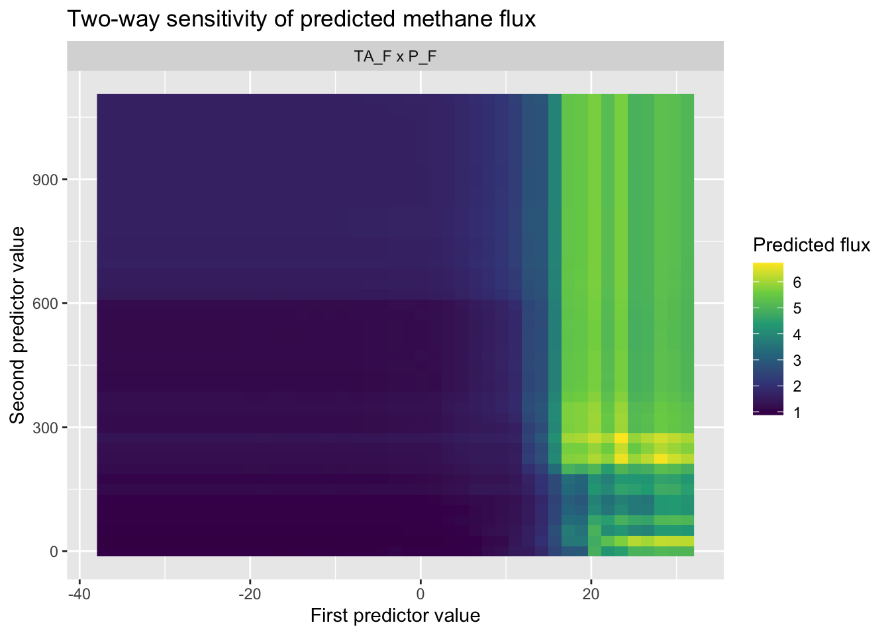
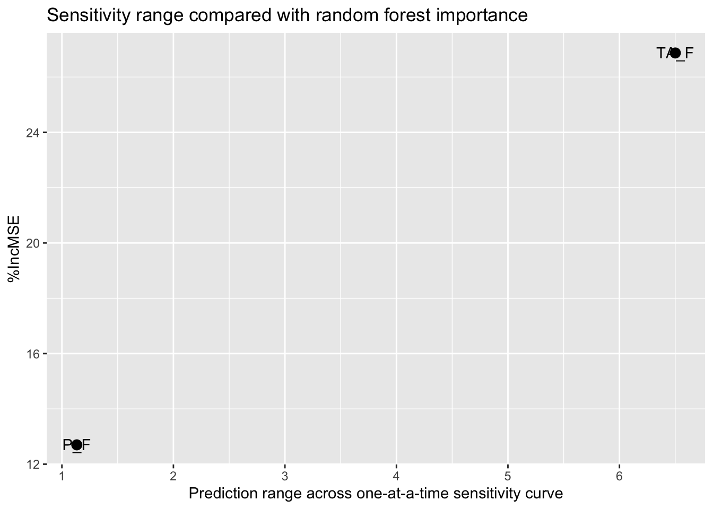

install.packages("randomForest")
install.packages("tidyverse")
install.packages("ggplot2")Sensitivity Analysis: Stress Testing a Methane Flux Model
From prediction to model trust
In the Random Forest workshop, we built a model to predict monthly methane flux. A prediction is only useful if we understand how the model responds to changing inputs and where the model is being asked to extrapolate beyond the data it learned from.
In this workshop, we will ask:
What does our methane model believe about climate, vegetation, and ecosystem controls, and can we trust those beliefs for Yale-Myers-like wetland conditions?
By the end of this workshop, you will be able to:
- Identify which predictors are used by a fitted random forest model.
- Summarize the training conditions used to fit the model.
- Build one-at-a-time sensitivity curves.
- Compare realistic methane flux scenarios.
- Flag scenarios that fall outside the model’s training range.
- Build two-way sensitivity heatmaps to explore interactions.
- Compare sensitivity results with random forest variable importance.
- Write a short model-risk interpretation for final project reporting.
Install packages
Load libraries
library(randomForest)
library(tidyverse)
library(ggplot2)Load the model
This workshop first looks for the model saved by the updated Random Forest workshop. If that file has not been created yet, it uses the original course sensitivity model.
if (file.exists("data/products/random_forest_model.RDATA")) {
load("data/products/random_forest_model.RDATA")
sensitivity_source <- "data/products/random_forest_model.RDATA"
} else {
load("data/SensitivityProducts.RDATA")
fch4_rf <- FCH4_F_gC.rf
final_formula <- formula(fch4_rf)
final_predictors <- attr(terms(fch4_rf), "term.labels")
sensitivity_source <- "data/SensitivityProducts.RDATA"
}
sensitivity_source[1] "data/SensitivityProducts.RDATA"Inspect the model without printing the full forest object:
final_formulaFCH4_F_gC ~ P_F + TA_F + Upland
attr(,"variables")
list(FCH4_F_gC, P_F, TA_F, Upland)
attr(,"factors")
P_F TA_F Upland
FCH4_F_gC 0 0 0
P_F 1 0 0
TA_F 0 1 0
Upland 0 0 1
attr(,"term.labels")
[1] "P_F" "TA_F" "Upland"
attr(,"order")
[1] 1 1 1
attr(,"intercept")
[1] 0
attr(,"response")
[1] 1
attr(,"predvars")
list(FCH4_F_gC, P_F, TA_F, Upland)
attr(,"dataClasses")
FCH4_F_gC P_F TA_F Upland
"numeric" "numeric" "numeric" "factor" final_predictors[1] "P_F" "TA_F" "Upland"fch4_rf$ntree[1] 500fch4_rf$mtry[1] 1Prepare the training data as a regular data frame:
train_data <- train %>%
as.data.frame() %>%
drop_na(FCH4_F_gC, all_of(final_predictors))
nrow(train_data)[1] 1649n_distinct(train_data$SITE)[1] 60Training domain
Sensitivity analysis should begin with the range of conditions the model actually saw. These ranges define the training domain. Predictions outside these ranges are extrapolations.
numeric_predictors <- final_predictors[
map_lgl(train_data[final_predictors], is.numeric)
]
categorical_predictors <- setdiff(final_predictors, numeric_predictors)
numeric_domain <- train_data %>%
summarize(across(all_of(numeric_predictors),
list(min = min,
q25 = ~ quantile(.x, 0.25),
median = median,
q75 = ~ quantile(.x, 0.75),
max = max),
.names = "{.col}_{.fn}")) %>%
pivot_longer(everything(),
names_to = c("predictor", "summary"),
names_pattern = "(.+)_(min|q25|median|q75|max)",
values_to = "value") %>%
pivot_wider(names_from = summary, values_from = value)
numeric_domain# A tibble: 2 × 6
predictor min q25 median q75 max
<chr> <dbl> <dbl> <dbl> <dbl> <dbl>
1 P_F 0 15.6 43.7 83.1 1094.
2 TA_F -37.2 1.81 10.7 17.0 31.3For categorical predictors, list the levels represented in training:
categorical_domain <- map_dfr(categorical_predictors, function(predictor) {
tibble(
predictor = predictor,
level = as.character(sort(unique(train_data[[predictor]])))
)
})
categorical_domain# A tibble: 2 × 2
predictor level
<chr> <chr>
1 Upland 0
2 Upland 1 Visualize the numeric training domain:
numeric_domain %>%
pivot_longer(c(min, q25, median, q75, max),
names_to = "summary",
values_to = "value") %>%
mutate(summary = factor(summary, levels = c("min", "q25", "median", "q75", "max"))) %>%
ggplot(aes(x = summary, y = value, group = predictor)) +
geom_line() +
geom_point() +
facet_wrap(~ predictor, scales = "free_y") +
labs(title = "Training domain for model predictors",
x = "Summary statistic",
y = "Value")
A reference condition
We need a baseline row that contains one value for every predictor in the model. Numeric predictors are set to their median training value. Categorical predictors are set to their most common training level.
mode_value <- function(x) {
tab <- sort(table(x), decreasing = TRUE)
names(tab)[1]
}
make_reference_row <- function(data, predictors) {
reference <- map(predictors, function(predictor) {
x <- data[[predictor]]
if (is.numeric(x)) {
median(x, na.rm = TRUE)
} else {
mode_value(x)
}
})
names(reference) <- predictors
as_tibble(reference)
}
reference_row <- make_reference_row(train_data, final_predictors)
reference_row <- reference_row %>%
mutate(across(all_of(categorical_predictors), ~ factor(.x, levels = levels(train_data[[cur_column()]]))))
reference_row# A tibble: 1 × 3
P_F TA_F Upland
<dbl> <dbl> <fct>
1 43.7 10.7 0 Predict methane flux for the reference condition:
reference_row$predicted_flux <- predict(fch4_rf, newdata = reference_row)
reference_row# A tibble: 1 × 4
P_F TA_F Upland predicted_flux
<dbl> <dbl> <fct> <dbl>
1 43.7 10.7 0 1.37One-at-a-time sensitivity
One-at-a-time sensitivity varies one predictor across its observed training range while holding the other predictors constant. This is a simple way to ask how strongly the model responds to each variable.
make_oat_grid <- function(predictor, data, reference, n = 60) {
x <- data[[predictor]]
if (!is.numeric(x)) {
return(NULL)
}
varied_values <- tibble(
!!predictor := seq(min(x, na.rm = TRUE),
max(x, na.rm = TRUE),
length.out = n)
)
reference %>%
select(-all_of(predictor)) %>%
slice(rep(1, n)) %>%
bind_cols(varied_values)
}
oat_predictions <- map_dfr(numeric_predictors, function(predictor) {
grid <- make_oat_grid(predictor, train_data, reference_row)
grid$predicted_flux <- predict(fch4_rf, newdata = grid)
grid$varied_predictor <- predictor
grid$varied_value <- grid[[predictor]]
grid
})
oat_predictions %>%
select(varied_predictor, varied_value, predicted_flux) %>%
head()# A tibble: 6 × 3
varied_predictor varied_value predicted_flux
<chr> <dbl> <dbl>
1 P_F 0 1.38
2 P_F 18.5 1.20
3 P_F 37.1 1.30
4 P_F 55.6 1.34
5 P_F 74.2 1.27
6 P_F 92.7 1.26Plot the one-at-a-time sensitivity curves:
ggplot(oat_predictions, aes(x = varied_value, y = predicted_flux)) +
geom_line(linewidth = 1) +
facet_wrap(~ varied_predictor, scales = "free_x") +
labs(title = "One-at-a-time sensitivity curves",
x = "Predictor value",
y = "Predicted methane flux")
Summarize how much predictions changed as each variable was varied:
oat_sensitivity_summary <- oat_predictions %>%
group_by(varied_predictor) %>%
summarize(
min_pred = min(predicted_flux),
max_pred = max(predicted_flux),
sensitivity_range = max_pred - min_pred,
.groups = "drop"
) %>%
arrange(desc(sensitivity_range))
oat_sensitivity_summary# A tibble: 2 × 4
varied_predictor min_pred max_pred sensitivity_range
<chr> <dbl> <dbl> <dbl>
1 TA_F 0.951 7.45 6.50
2 P_F 1.20 2.33 1.13Yale-Myers-style scenarios
Scenario analysis asks how the model responds to meaningful combinations of conditions. The exact Yale-Myers methane flux is unknown here, so these are modeling scenarios, not field observations.
q_value <- function(predictor, probability) {
quantile(train_data[[predictor]], probability, na.rm = TRUE)
}
set_if_present <- function(data, predictor, value) {
if (predictor %in% names(data)) {
data[[predictor]] <- value
}
data
}
scenario_row <- function(name, temperature_q, precipitation_q, vpd_q = 0.5,
ndvi_q = 0.5, evi_q = 0.5) {
row <- reference_row %>%
select(all_of(final_predictors))
row <- set_if_present(row, "TA_F", q_value("TA_F", temperature_q))
row <- set_if_present(row, "P_F", q_value("P_F", precipitation_q))
row <- set_if_present(row, "VPD_F", q_value("VPD_F", vpd_q))
row <- set_if_present(row, "NDVI", q_value("NDVI", ndvi_q))
row <- set_if_present(row, "EVI", q_value("EVI", evi_q))
row %>%
mutate(scenario = name, .before = 1)
}
scenario_table <- bind_rows(
scenario_row("cool wet spring", temperature_q = 0.25, precipitation_q = 0.75, vpd_q = 0.25),
scenario_row("hot dry summer", temperature_q = 0.90, precipitation_q = 0.10, vpd_q = 0.90),
scenario_row("warm wet summer", temperature_q = 0.75, precipitation_q = 0.75, vpd_q = 0.50),
scenario_row("Yale-Myers-like wetland month", temperature_q = 0.60, precipitation_q = 0.70, vpd_q = 0.40,
ndvi_q = 0.75, evi_q = 0.75),
scenario_row("outside training stress test", temperature_q = 1.00, precipitation_q = 1.00, vpd_q = 1.00)
)
scenario_table$predicted_flux <- predict(fch4_rf, newdata = scenario_table)
scenario_table# A tibble: 5 × 5
scenario P_F TA_F Upland predicted_flux
<chr> <dbl> <dbl> <fct> <dbl>
1 cool wet spring 83.1 1.81 0 0.998
2 hot dry summer 1.62 21.8 0 3.86
3 warm wet summer 83.1 17.0 0 3.42
4 Yale-Myers-like wetland month 71.5 13.2 0 1.63
5 outside training stress test 1094. 31.3 0 5.07 Compare the scenario predictions:
scenario_table %>%
mutate(scenario = reorder(scenario, predicted_flux)) %>%
ggplot(aes(x = scenario, y = predicted_flux)) +
geom_col() +
coord_flip() +
labs(title = "Predicted methane flux under model scenarios",
x = NULL,
y = "Predicted methane flux")
Training-range flags
A scenario can look precise while still being outside the model’s experience. This helper checks whether scenario values are inside the numeric range of the training data and whether categorical levels were observed during training.
flag_training_range <- function(scenarios, training_data, predictors) {
numeric_flags <- map_dfr(intersect(predictors, numeric_predictors), function(predictor) {
min_value <- min(training_data[[predictor]], na.rm = TRUE)
max_value <- max(training_data[[predictor]], na.rm = TRUE)
scenarios %>%
transmute(
scenario,
predictor = predictor,
value = as.character(.data[[predictor]]),
inside_training_domain = .data[[predictor]] >= min_value & .data[[predictor]] <= max_value
)
})
categorical_flags <- map_dfr(intersect(predictors, categorical_predictors), function(predictor) {
observed_levels <- unique(as.character(training_data[[predictor]]))
scenarios %>%
transmute(
scenario,
predictor = predictor,
value = as.character(.data[[predictor]]),
inside_training_domain = as.character(.data[[predictor]]) %in% observed_levels
)
})
bind_rows(numeric_flags, categorical_flags)
}
scenario_range_flags <- flag_training_range(scenario_table, train_data, final_predictors)
scenario_range_flags# A tibble: 15 × 4
scenario predictor value inside_training_domain
<chr> <chr> <chr> <lgl>
1 cool wet spring P_F 83.07 TRUE
2 hot dry summer P_F 1.6162 TRUE
3 warm wet summer P_F 83.07 TRUE
4 Yale-Myers-like wetland month P_F 71.4928 TRUE
5 outside training stress test P_F 1094.017 TRUE
6 cool wet spring TA_F 1.80578158602… TRUE
7 hot dry summer TA_F 21.8130966013… TRUE
8 warm wet summer TA_F 17.0428306451… TRUE
9 Yale-Myers-like wetland month TA_F 13.1865114247… TRUE
10 outside training stress test TA_F 31.2801048611… TRUE
11 cool wet spring Upland 0 TRUE
12 hot dry summer Upland 0 TRUE
13 warm wet summer Upland 0 TRUE
14 Yale-Myers-like wetland month Upland 0 TRUE
15 outside training stress test Upland 0 TRUE Summarize whether each scenario stays inside the model’s training domain:
scenario_domain_summary <- scenario_range_flags %>%
group_by(scenario) %>%
summarize(
predictors_inside_domain = sum(inside_training_domain),
predictors_checked = n(),
fully_inside_domain = all(inside_training_domain),
.groups = "drop"
) %>%
left_join(scenario_table %>% select(scenario, predicted_flux), by = "scenario") %>%
arrange(desc(predicted_flux))
scenario_domain_summary# A tibble: 5 × 5
scenario predictors_inside_do…¹ predictors_checked fully_inside_domain
<chr> <int> <int> <lgl>
1 outside trainin… 3 3 TRUE
2 hot dry summer 3 3 TRUE
3 warm wet summer 3 3 TRUE
4 Yale-Myers-like… 3 3 TRUE
5 cool wet spring 3 3 TRUE
# ℹ abbreviated name: ¹predictors_inside_domain
# ℹ 1 more variable: predicted_flux <dbl>Two-way sensitivity
Methane flux can respond to combinations of conditions. Two-way sensitivity varies two predictors at the same time while holding the others at their reference values.
make_two_way_grid <- function(x_predictor, y_predictor, data, reference, n = 45) {
x_values <- seq(min(data[[x_predictor]], na.rm = TRUE),
max(data[[x_predictor]], na.rm = TRUE),
length.out = n)
y_values <- seq(min(data[[y_predictor]], na.rm = TRUE),
max(data[[y_predictor]], na.rm = TRUE),
length.out = n)
varied_grid <- crossing(
!!x_predictor := x_values,
!!y_predictor := y_values
)
reference %>%
select(-all_of(c(x_predictor, y_predictor))) %>%
slice(rep(1, nrow(varied_grid))) %>%
bind_cols(varied_grid)
}
two_way_pairs <- list(
c("TA_F", "P_F"),
c("TA_F", "VPD_F"),
c("TA_F", "NDVI")
) %>%
keep(~ all(.x %in% numeric_predictors))
two_way_predictions <- imap_dfr(two_way_pairs, function(pair, pair_id) {
grid <- make_two_way_grid(pair[1], pair[2], train_data, reference_row)
grid$predicted_flux <- predict(fch4_rf, newdata = grid)
grid$x_predictor <- pair[1]
grid$y_predictor <- pair[2]
grid$x_value <- grid[[pair[1]]]
grid$y_value <- grid[[pair[2]]]
grid$pair <- paste(pair, collapse = " x ")
grid
})
two_way_predictions %>%
select(pair, x_value, y_value, predicted_flux) %>%
head()# A tibble: 6 × 4
pair x_value y_value predicted_flux
<chr> <dbl> <dbl> <dbl>
1 TA_F x P_F -37.2 0 0.954
2 TA_F x P_F -37.2 24.9 0.888
3 TA_F x P_F -37.2 49.7 0.954
4 TA_F x P_F -37.2 74.6 0.980
5 TA_F x P_F -37.2 99.5 0.973
6 TA_F x P_F -37.2 124. 1.01 Plot the two-way sensitivity surfaces:
ggplot(two_way_predictions, aes(x = x_value, y = y_value, fill = predicted_flux)) +
geom_raster() +
facet_wrap(~ pair, scales = "free") +
scale_fill_viridis_c() +
labs(title = "Two-way sensitivity of predicted methane flux",
x = "First predictor value",
y = "Second predictor value",
fill = "Predicted flux")
Compare sensitivity with importance
Variable importance ranks predictors by how much they contributed to model performance. Sensitivity curves ask how much predictions change when a predictor is varied across its training range. They are related, but they are not the same.
importance_table <- importance(fch4_rf) %>%
as.data.frame() %>%
rownames_to_column("predictor") %>%
as_tibble()
importance_table# A tibble: 3 × 3
predictor `%IncMSE` IncNodePurity
<chr> <dbl> <dbl>
1 P_F 12.7 1001.
2 TA_F 26.9 2600.
3 Upland 53.5 1099.Join importance to the sensitivity summary:
importance_sensitivity <- oat_sensitivity_summary %>%
left_join(importance_table, by = c("varied_predictor" = "predictor")) %>%
arrange(desc(sensitivity_range))
importance_sensitivity# A tibble: 2 × 6
varied_predictor min_pred max_pred sensitivity_range `%IncMSE` IncNodePurity
<chr> <dbl> <dbl> <dbl> <dbl> <dbl>
1 TA_F 0.951 7.45 6.50 26.9 2600.
2 P_F 1.20 2.33 1.13 12.7 1001.Plot the comparison when an importance column is available:
importance_column <- names(importance_table)[2]
importance_sensitivity %>%
ggplot(aes(x = sensitivity_range, y = .data[[importance_column]], label = varied_predictor)) +
geom_point(size = 3) +
geom_text(nudge_y = 0.02, check_overlap = TRUE) +
labs(title = "Sensitivity range compared with random forest importance",
x = "Prediction range across one-at-a-time sensitivity curve",
y = importance_column)
Model-risk memo
Sensitivity analysis is not just a plot-making step. It is part of model interpretation. For Yale-Myers wetlands, we especially care about whether high-methane scenarios are supported by the training data.
Use the objects created above to answer:
- Which predictor produced the largest one-at-a-time change in predicted methane flux?
- Which scenario produced the highest predicted methane flux?
- Did the Yale-Myers-like wetland scenario stay inside the model’s training domain?
- Do variable importance and sensitivity tell the same story?
- What would make you cautious about using this model to estimate methane flux for Yale-Myers wetlands?
Course product
This workshop produces a sensitivity report and model-risk memo. Use the standard deliverable shape from the Final Project Roadmap, with extra emphasis on training-domain checks, scenarios, and what should not be trusted.
Assignment
Prepare a short sensitivity analysis report for your final methane flux model. Include:
- The final model formula and a list of predictors.
- A training-domain summary table.
- One-at-a-time sensitivity curves for all numeric predictors in your model.
- At least three realistic scenarios, including one that represents your target study site.
- A training-range flag table for the scenarios.
- One two-way sensitivity plot.
- A comparison of sensitivity results and random forest variable importance.
- A short model-risk memo explaining where you trust the model and where you do not.